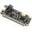
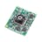
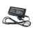

Things used in this project
Hardware components |
|
|  | Blues Swan |

|
Blues Notecard (Cellular) |

|
SG90 Micro-servo motor |

|
DFRobot Gravity:Digital Push Button (Yellow) |
|  | Useful Sensors Person Sensor |
|  | Digilent 60W PCIe 12V 5A Power Supply |
Story
Abstract: Employing doorways to enter rooms housing alternatives, such as sports equipment or hobby space, is one of the biggest challenges facing the mobility-impaired individual. It has long been the case that most door handles and locks severely limit the amount of independence an individual can be afforded. An automated door accessibility system eliminates traditional door handles with a lever-style mechanism controlled by the SWAN 3 microcontroller and a servo motor. This system activates the proximity sensor or push button and allows remote monitoring and operation through the Notecard Cellular NBGL. Since the paper is such, this system will provide ergonomic operation with full ease of use to include and empower free movement.
System Components:
SWAN 3 Microcontroller:
Function: The servo motor shall be controlled, and the input from sensors shall be processed.
Features: The SWAN 3 is power-efficient, has many I/O options, and allows programming for custom functionality.
Notecard Cellular NBGL:
Function: The function is to provide low-power LTE connectivity for cellular connectivity to enable remote monitoring and control. Features: Low power LTE connectivity, Global coverage, software compatibility with various mobile network providers. Servo Motor:
Function: The servo motor serves to actuate mechanically the lever-style door handle for opening or closing of the door.
Control: This shall be controlled by the SWAN 3 to ensure a proper and accurate movement of the mechanism. Proximity Sensor/Push Button:
Function: It provides a trigger action to move the servo motor to open or close the door.
Location: It shall be installed near the door for the handiness of its users. Lever-Style Door Handle:
Design: Ergonomically designed to operate-use with minimum applied force.
Operation: The servomotor is connected to it for automated operations.
Power Source:
Type: Rechargeable battery or directly from power supply
Capacity: Able to run the system for extended hours without the need to recharge or disruption of power.
System Operation:
Initialization:
Setup: Install the SWAN 3 near the door, a servomotor, and sensor. Ensure all components are properly mounted and connected to each other.
Connection: The SWAN 3 and the Notecard Cellular NBGL communicate for remote monitoring and control.
Operation of Door
Activation: The user triggers the proximity sensor or presses the push button.
Motor Control: SWAN 3 triggers a servo motor to operate the lever handle.
Operating Door/ Closing Door: The servo motor will run the handle with smooth operation and allow the opening or closing of the door.
Reset: Following operation, the servo motor returns the handle to the neutral position.
Remote Monitoring:
Status Updates: Real-time positional status updates are sent from the Notecard Cellular NBGL to a remote device.
Remote Control: Caregivers or users manage the operation of the door through a connected mobile application for assistance where needed.
Development and Testing:
Prototyping:
Components Assembly: The servo motor, SWAN 3, and proximity sensor will be integrated into the lever-style door handle. At this stage, everything should be wired accurately.
Firmware Development: Designing code for servo motor driving and sensor reading is required. It shall have capabilities to monitor the system remotely.
Testing:
Lab Testing: The system shall be placed in a very controlled environment to test the operating mechanism of the door and the accuracy of sensor readings.
Field Testing: Putting the system in a real-world context and testing it in terms of performance, reliability, and user interaction.
User Testing: Feedback by people with mobility problems to find out any issues and tune the system for their benefit.
Iteration:
Refinement: Incorporate user feedback and test results to develop better design specifications. Any correction and optimization, if needed.
Installation Guidelines: Provide step-by-step installation guidelines such that users themselves can install the system on any type of platform in any environment.
Operating Instructions:
Prepare the Circuit:
Connect the servo motor and proximity sensor to SWAN 3 as per the circuit diagram.
Mount the servo motor onto the lever-style door handle, fitting very well so it could enable functionality. Upload the Code: You will open the Arduino IDE and copy the code below into it. Now, connect the SWAN 3 to your computer and upload this code. Ensure that there are no errors in uploading. Test the System: Observe the serial output about status and if the door is behaving as anticipated.
Test proximity sensor or push button if the activation is appropriately returned. Check remote status updates on the Notecard Cellular NBGL for appropriate integration and functionality.
Conclusion: Detailed in this document is the design, functionality, and implementation of an automated accessibility system for doors using SWAN 3 and Notecard Cellular NBGL. It will improve mobility and independence for the impaired, by offering seamless door access with a user-friendly solution.